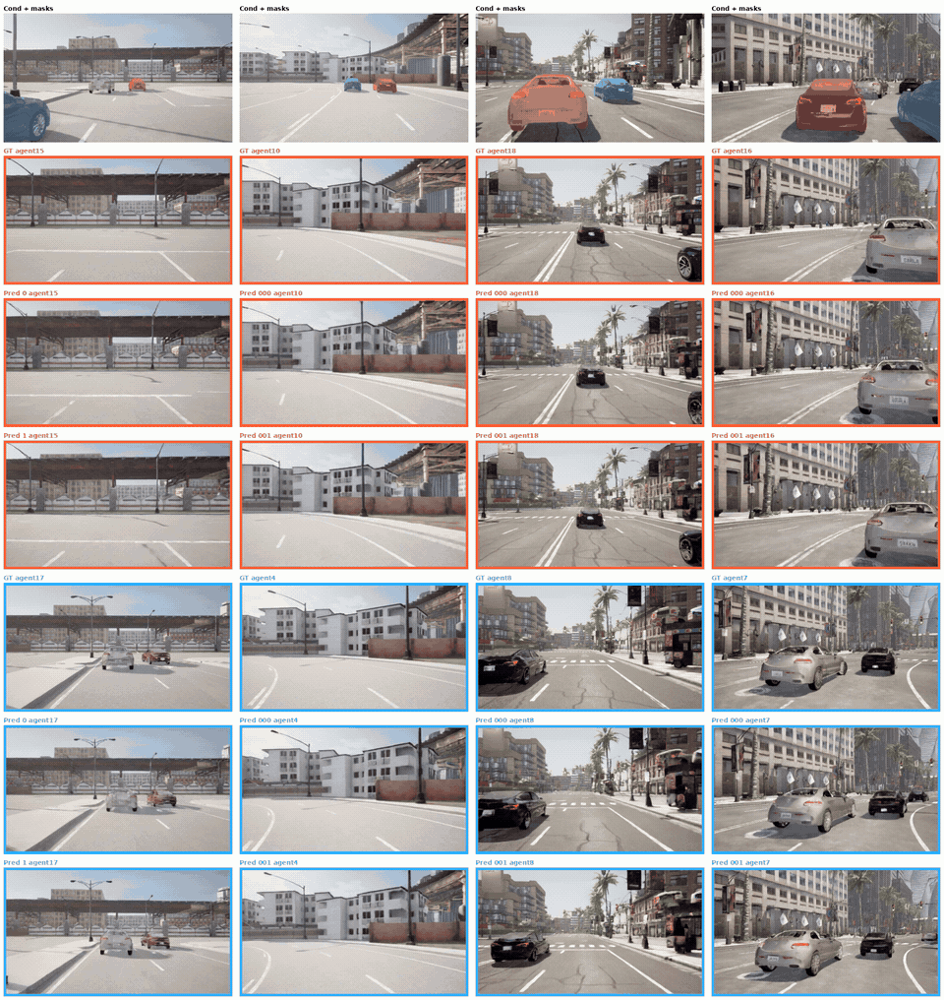
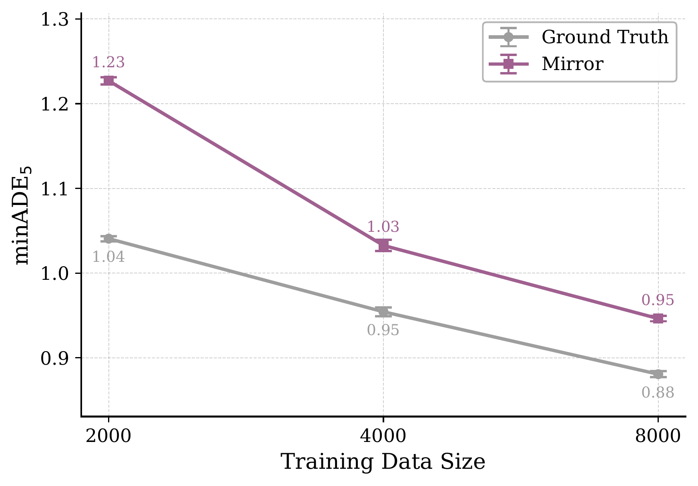
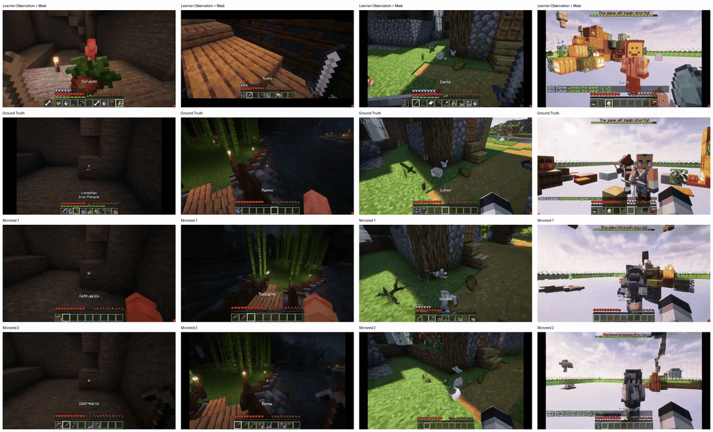

Mirror Learning asks whether there is an evolutionarily conservable system that could enable “watch and learn” style, human-like learning.
We introduce mirror learning, a framework that transforms third-person demonstrations into synthetic first-person observation and action data for training embodied agents. Humans and animals routinely learn by watching others, but modern imitation-learning systems still depend heavily on first-person demonstrations collected through teleoperation or direct interaction.
We show that video diffusion models can be adapted to “put the learner in the demonstrator’s shoes,” synthesizing first-person video from third-person observations. Pairing this video with actions inferred by an inverse dynamics model results in mirror data that can train effective policies on its own—and can further improve behavior cloning when added to standard first-person data.
Who do we learn from, and can we put ourselves in their shoes?

This was a eureka moment for us: video diffusion models, repurposed in this way, have spatial representations rich enough to perform a perspective transformation while inferring the demonstrator’s pose from only a segmentation mask. Our previous work on lifelong learning of video diffusion models suggests that this view-transforming capability may eventually be learned entirely locally.
Can we learn to drive simply by watching others?
The short answer is yes. An inverse dynamics model—which estimates the action that produced a change in observations—can be trained locally and applied to mirror video to generate action labels. Both the inverse dynamics model and the mirror video model introduce noise, but the resulting data is still good enough for behavior cloning. In the paper, we train an end-to-end self-driving policy from it.
More interestingly, we can directly compare real, ground-truth demonstrations with mirror data. We find that mirror data is about half as effective as first-person data for training. That may sound negative, but it is a major win: both the mirror video model and inverse dynamics model can be trained locally, requiring nothing beyond experience from the target embodiment itself.

We have not yet studied cross-embodiment learning; in our experiments, learner and demonstrator share the same sensor and actuator setup. Still, the implications for teleoperation versus passive data gathering are profound. If a robot can train a sufficiently good inverse dynamics model and world model from its own interactions, it has what it needs for mirror learning. Heavily instrumenting a single humanoid robot—or a human demonstrator—with tactile, pressure, torque, and other sensors might be enough to harvest training data passively.
What about humanoids and more complex environments?
We also used instrumented Minecraft videos from a complex multiplayer environment where the demonstrator’s ground-truth view was available. It works there too. We were particularly struck by the third-column example below, where the mirror video model understands that the demonstrator picked up an item and updates the toolbar accordingly.
